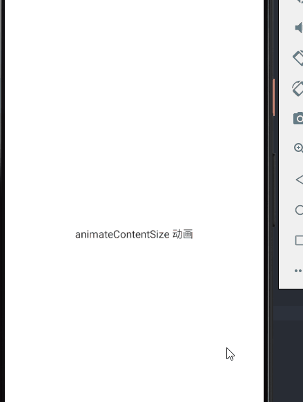
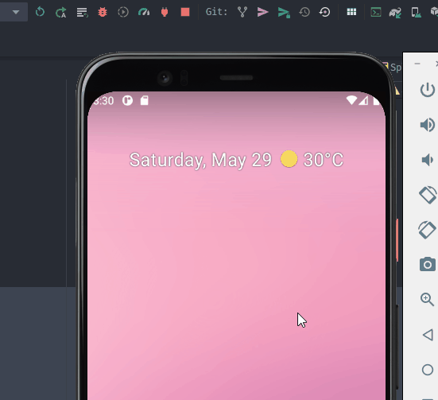
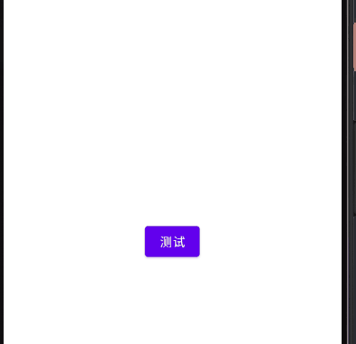
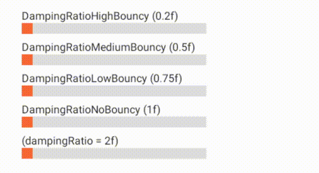

概述
Jetpack Compose 提供了强大的、可扩展的 API，使得在你的应用程序的用户界面上实现各种动画变得容易。本文描述了如何使用这些 API，以及根据你的动画场景使用哪个 API。
1. 概述
动画在现代移动应用中至关重要，其目的是实现自然流畅、易于理解的用户体验。许多 Jetpack Compose 动画 API 可以提供可组合函数，就像布局和其他界面元素一样；它们由使用 Kotlin 协程挂起函数构建的较低级别 API 提供支持。本指南将首先介绍可用于许多实际场景的高级别 API，接着介绍可为您提供进一步控制和自定义功能的低级别 API。
下面的图表可以帮助您确定要使用哪种 API 来实现您的动画效果。

-
如果您要为布局中的内容变化添加动画效果：
-
如果您要为进入/退出过渡添加动画效果：
- 使用
AnimationVisibility。
- 使用
-
如果您要为内容大小变化添加动画效果：
- 使用
Modifier.animateContentSize。
- 使用
-
否则使用
Crossfade。
-
-
如果动画效果基于状态：
- 如果在组合期间呈现动画效果：
- 如果动画效果无限循环：
- 使用
rememberInfiniteTransition。
- 使用
- 如果动画效果无限循环：
- 如果在组合期间呈现动画效果：
-
如果您要同时为多个值添加动画效果：
- 使用
updateTransition。 - 否则使用
animate*AsState。
- 使用
-
如果您要对动画播放时间进行精细控制：
- 使用
Animation。
- 使用
-
如果动画是唯一可信来源：
- 使用
Animatable。 - 否则，请使用
AnimationState或animate。
- 使用
| API | 功能 |
|---|---|
| AnimationVisibility | 进入/退出的过渡动画 |
| Modifier.contentSize | 内容大小的变化过渡动画 |
| Crossfade | |
| rememberInfiniteTransition | |
| updateTransition | |
| animate*AsState | 指定类型的数据变化动画 |
2. 高级动画 API
Compose 为许多应用程序中使用的几种常见动画模式提供了高级动画 API。 这些 API 是为适应 Material Design Motion 而量身定制的。
AnimatedVisibiliy (实验性)
注意
实验性API将来可能会更改，或者可能会完全删除。
// 如果你在这里有 getValue 的报错，或者无法自动导入，这是一些旧版 Android Studio 还没有完全适配 Compose 的 bug。
// 你需要手动导入，或者更新到最新的 AS
// import androidx.compose.runtime.getValue
var state by remember{ mutableStateOf(true) }
Column(
modifier = Modifier
.fillMaxSize(),
horizontalAlignment = Alignment.CenterHorizontally,
verticalArrangement = Arrangement.Center
){
AnimatedVisibility(visible = state) {
Text(
text = "这是一个普通的正文",
fontWeight = FontWeight.W900,
style = MaterialTheme.typography.h5
)
}
Spacer(Modifier.padding(vertical = 50.dp))
Button(onClick = {state = !state}) {
Text(if(state) "隐藏" else "显示")
}
}
默认情况下
内容通过 fadeIn() 和 expandVertically() 出现
通过 fadeOut() 和 shrinkVertically() 消失。你可以通过指定 EnterTransition 和 ExitTransition 来自定义过渡效果。

var state by remember{ mutableStateOf(true) }
Column(
modifier = Modifier
.fillMaxSize(),
horizontalAlignment = Alignment.CenterHorizontally,
verticalArrangement = Arrangement.Center
){
AnimatedVisibility(
visible = state,
enter = slideInVertically(
initialOffsetY = { -40 }
) + expandVertically(
expandFrom = Alignment.Top
) + fadeIn(initialAlpha = 0.3f),
exit = shrinkHorizontally() + fadeOut()
) {
Text(
text = "这是一个普通的正文",
fontWeight = FontWeight.W900,
style = MaterialTheme.typography.h5
)
}
Spacer(Modifier.padding(vertical = 50.dp))
Button(onClick = { state = !state }) {
Text(if (state) "隐藏" else "显示")
}
}

如上例所示，你可以将多个 EnterTransition 或 ExitTransition 对象与一个 + 运算符组合在一起，并且每个对象都接受可选参数以自定义其行为。
EnterTransition 的一些方法


ExitTransition 的一些方法


animateContentSize
animateContentSize 可以对尺寸更改进行动画处理
以下是一个简单的例子：
var text by remember{ mutableStateOf("animateContentSize 动画")}
Box(
modifier = Modifier.fillMaxSize(),
contentAlignment = Alignment.Center
){
Text(text, modifier = Modifier
.clickable{
text += text
}
.animateContentSize()
)
}

再来看看没有加 animateContentSize() 的效果吧

Crossfade
Crossfade 在两个布局之间用交叉淡入淡出的动画。通过切换传递给当前参数的值，内容以交叉渐变动画的方式切换
@Composable
fun <T> Crossfade(
targetState: T,
modifier: Modifier = Modifier,
animationSpec: FiniteAnimationSpec<Float> = tween(),
content: @Composable (T) -> Unit
)
来看看一个简单的使用
var flag by remember{ mutableStateOf(false) }
Column{
Crossfade(
targetState = flag, animationSpec = tween(1000)
) {
when(it){
false -> Screen1()
true -> Screen2()
}
}
Button(
onClick = { flag = !flag }
) {
Text("切换")
}
}
@Composable
fun Screen1() {
Box(
modifier = Modifier
.background(Color.Red)
.size(200.dp),
contentAlignment = Alignment.Center
) { }
}
@Composable
fun Screen2() {
Box(
modifier = Modifier
.background(Color.Blue)
.size(200.dp),
contentAlignment = Alignment.Center
) { }
}

3. 低级动画 API
上一节提到的所有高级动画 API 都是建立在低级动画 API 的基础之上的。
animate*AsState 函数是最简单的 API，它将一个即时的值变化渲染成一个动画值。它由 Animatable 支持，Animatable 是一个基于协程的 API，用于给单个值制作动画。updateTransition 创建了一个过渡对象，可以管理多个动画值，并根据状态变化运行它们。rememberInfiniteTransition 类似，但它创建了一个无限的过渡，可以管理多个动画，无限地持续运行。除了 Animatable 之外，所有这些API 都是可组合的，这意味着可以在合成之外创建这些动画。
所有这些 API 都是基于更基本的 Animation API。尽管大多数应用程序不会直接与 Animation 交互，但 Animation 的一些定制功能可以通过更高级别的 API 获得。关于 AnimationVector 和AnimationSpec 的更多信息，请参阅自定义动画。

animate*AsState
animate*AsState 函数是 Compose 中最简单的动画 API，用于为单个值制作动画。你只需提供结束值（或目标值），API 就会从当前值到指定值开始动画。
下面是一个使用这个 API 制作 alpha 动画的例子。通过简单地将目标值包裹在 animateFloatAsState 中，alpha 值现在是一个介于所提供的值（本例中是 1f 或 0.5f）之间的动画值。
val alpha: Float by animateFloatAsState(if (enabled) 1f else 0.5f)
Box(
Modifier.fillMaxSize()
.graphicsLayer(alpha = alpha)
.background(Color.Red)
)
在这里查看关于 animate*AsState 的更多介绍
Animatable
Animatable 会在内部储存一个值，当值通过 animateTo 被改变时，它可以产生动画。这就是支持 animate*AsState 实现的 API。它确保了一致的延续性和互斥性，这意味着值的变化总是连续的，任何正在进行的动画都会被取消。
Animatable 的许多功能，包括 animateTo，都是作为 suspend 函数提供的。这意味着它们需要被包裹在一个适当的协程作用域内内。例如，你可以使用 LaunchedEffect 这个 Composable 来创建一个只针对指定键值的持续时间的作用域。
var flag by remember{ mutableStateOf(false) }
val color = remember { Animatable(Color.Gray) }
Column{
Box(Modifier.size(300.dp).background(color.value))
Button(
onClick = { flag = !flag }
) {
Text("切换")
}
}
LaunchedEffect(flag) {
color.animateTo(
targetValue = if (flag){ Color.Green } else { Color.Red },
animationSpec = tween(1000)
)
}

在上面的例子中，我们创建并记住了一个 Animatable 的实例，其初始值为 Color.Gray。根据 flag 的值，颜色会动画地变成 Color.Green 或 Color.Red。任何对 flag 的后续改变都会启动动画到另一种颜色。如果在改变值的时候有一个正在进行的动画，那么这个动画会被取消，新的动画会从当前的快照值和当前的速度开始。
这是支持上一节中提到的 animate*AsState API 的动画实现。与 animate*AsState 相比，直接使用 Animatable 在几个方面给了我们更精细的控制。首先，Animatable 可以有一个不同于其第一个目标值的初始值。例如，上面的代码例子一开始显示的是一个灰色的盒子，当运行程序的时候立即开始动画地变成为绿色或红色。第二，Animatable 对内容值提供了更多的操作，即 snapTo 和 animateDecay。 snapTo 将当前值立即设置为目标值。当动画本身不是唯一的数据源，并且必须与其他状态同步时，例如触摸事件，这是非常有用的。 animateDecay 启动一个从给定速度开始放缓的动画。这对于实现甩动行为很有用。更多信息见手势和动画。
Animatable 支持 Float 和 Color，但任何数据类型都可以通过提供一个 TwoWayConverter 来使用。参见 AnimationVector获取更多信息。
你可以通过提供一个 AnimationSpec 来定制动画规格。参见 AnimationSpec获取更多信息。
updateTransition
Transition 管理一个或多个动画作为它的子项，并在多个状态之间同时运行它们。
这些状态可以是任何数据类型。在许多情况下，你可以使用一个自定义的枚举类型来确保类型安全，就像这个例子中一样。
private enum class BoxState {
Collapsed,
Expanded
}
updateTransition 可以创建并记住一个 Transition 的实例并更新其状态
var currentState by remember { mutableStateOf(BoxState.Collapsed) }
val transition = updateTransition(currentState)
然后你可以使用 animate* 扩展函数中的一个在这个过渡中定义一个子动画。指定每个状态的目标值。这些 animate* 函数返回一个动画值，在动画过程中，当用 updateTransition 更新过渡状态时，每一帧都会更新。
var currentState by remember { mutableStateOf(BoxState.Collapsed) }
val transition = updateTransition(currentState)
val rect by transition.animateDp { state ->
when (state) {
BoxState.Collapsed -> 0.dp
BoxState.Expanded -> 150.dp
}
}
Box(
modifier = Modifier
.size(rect)
.background(Color(0xFF0079D3)),
) { }

你可以选择传递一个 transitionSpec 参数，为每个过渡状态变化的组合指定一个不同的 AnimationSpec。参见 AnimationSpec 以了解更多信息。
val rect by transition.animateDp(
transitionSpec = {
when {
BoxState.Expanded isTransitioningTo BoxState.Collapsed ->
spring(stiffness = 50f)
else ->
tween(durationMillis = 500) // 动画时间
}
}
){ state ->
when (state) {
BoxState.Collapsed -> 0.dp
BoxState.Expanded -> 150.dp
}
}

一旦一个 transition 到达目标状态，Transition.currentState 将与 Transition.targetState 相同。这可以作为过渡是否完成的一个信号。
我们有时希望有一个与第一个目标状态不同的初始状态。我们可以使用 updateTransition 与 MutableTransitionState 来实现这一点。例如，它允许我们在代码进入合成时立即开始动画。
var currentState = remember { MutableTransitionState(BoxState.Collapsed) }
// 在运行程序时，将 currentState 的值变为 BoxState.Expanded，也就意味着，将会直接运行动画
currentState.targetState = BoxState.Expanded
val transition = updateTransition(currentState)
封装一个 Transition 并让它可以重复使用
对于简单的用例，在与你的用户界面相同的 composable 中定义过渡动画是一个完全有效的选择。然而，当你正在处理一个有许多动画值的复杂组件时，你可能想把动画实现与可组合的用户界面分开。
你可以通过创建一个持有所有动画值的类和一个返回该类实例的 "更新 "函数来做到这一点。过渡的实现可以被提取到新的独立函数中。当需要集中动画逻辑或使复杂的动画可重复使用时，这种模式很有用。
enum class BoxState { Collapsed, Expanded }
@Composable
fun AnimatingBox(boxState: BoxState) {
val transitionData = updateTransitionData(boxState)
// UI 树
Box(
modifier = Modifier
.background(transitionData.color)
.size(transitionData.size)
)
}
// 保存动画数值
private class TransitionData(
color: State<Color>,
size: State<Dp>
) {
val color by color
val size by size
}
// 创建一个 Transition 并返回其动画值。
@Composable
private fun updateTransitionData(boxState: BoxState): TransitionData {
val transition = updateTransition(boxState)
val color = transition.animateColor { state ->
when (state) {
BoxState.Collapsed -> Color.Gray
BoxState.Expanded -> Color.Red
}
}
val size = transition.animateDp { state ->
when (state) {
BoxState.Collapsed -> 64.dp
BoxState.Expanded -> 128.dp
}
}
return remember(transition) { TransitionData(color, size) }
}
rememberInfiniteTransition
InfiniteTransition 像 Transition 一样持有一个或多个子动画，但这些动画一进入构图就开始运行，除非它们被移除，否则不会停止。你可以用 rememberInfiniteTransition 创建一个 InfiniteTransition 的实例。子动画可以用 animateColor、animatedFloat 或 animatedValue 添加。你还需要指定一个 infiniteRepeatable 来指定动画形式。
val infiniteTransition = rememberInfiniteTransition()
val color by infiniteTransition.animateColor(
initialValue = Color.Red, // 初始值
targetValue = Color.Green, // 最终值
animationSpec = infiniteRepeatable(
animation = tween(1000, easing = LinearEasing), // 一个动画值的转换持续 1 秒，缓和方式为 LinearEasing
repeatMode = RepeatMode.Reverse
// 指定动画重复运行的方式，
// Reverse 为 init -> target, target -> init, init -> target
// Repeat 为 init -> target, init -> target, init -> target
)
)
Box(Modifier.fillMaxSize().background(color))

TargetBasedAnimation
TargetBasedAnimation 是我们到目前为止看到的最低级别的动画 API。其他 API 涵盖了大多数的使用情况，但直接使用 TargetBasedAnimation 可以让你自己控制动画的播放时间。在下面的例子中，TargetAnimation 的播放时间是根据 withFrameMillis 提供的帧时间手动控制的。
val anim = remember {
TargetBasedAnimation(
animationSpec = tween(200),
typeConverter = Float.VectorConverter,
initialValue = 200f,
targetValue = 1000f
)
}
var playTime by remember { mutableStateOf(0L) }
LaunchedEffect(anim) {
val startTime = withFrameNanos { it }
do {
playTime = withFrameNanos { it } - startTime
val animationValue = anim.getValueFromNanos(playTime)
} while (someCustomCondition())
}
4. 自定义动画
许多动画 API 通常接受参数来定制它的行为。
AnimationSpec
大多数动画 API 允许开发者通过一个可选的 AnimationSpec 参数来定制动画规格。
val alpha: Float by animateFloatAsState(
targetValue = if (enabled) 1f else 0.5f,
// 配置动画的持续时间和缓和度
animationSpec = tween(durationMillis = 300, easing = FastOutSlowInEasing)
)
有不同种类的 AnimationSpec 用于创建不同类型的动画。
spring
spring 在起始值和结束值之间创建一个基于物理学的动画。它需要 2 个参数：阻尼率和刚度。
dampingRatio 定义了弹簧的反弹程度。默认值是 Spring.DampingRatioNoBouncy。

stiffness 定义了弹簧向最终值移动的速度。默认值是 Spring.StiffnessMedium。
val value by animateFloatAsState(
targetValue = 1f,
animationSpec = spring(
dampingRatio = Spring.DampingRatioHighBouncy,
stiffness = Spring.StiffnessMedium
)
)
spring 可以比基于持续时间的 AnimationSpec 类型更顺利地处理中断，因为它保证了目标值在动画中变化时速度的连续性。 spring 被许多动画 API 用作默认的 AnimationSpec，如 animate*AsState 和 updateTransition 。
tween
tween 在指定的 durationMillis 上使用缓和曲线在开始和结束值之间进行动画。更多信息请看 Easing。你也可以指定 delayMillis 来推迟动画的开始时间。
val value by animateFloatAsState(
targetValue = 1f,
animationSpec = tween(
durationMillis = 300,
delayMillis = 50,
easing = LinearOutSlowInEasing
)
)
keyframes
keyframes 的动画基于动画持续时间中不同时间戳指定的快照值。在任何时候，动画值将在两个 keyframes 值之间插值。对于这些 keyframes 中的每一个，可以指定 Easing 来决定插值曲线。
指定 0 毫秒处和持续时间处的数值是可选的。如果你不指定这些值，它们将分别默认为动画的开始和结束值。
val value by animateFloatAsState(
targetValue = 1f,
animationSpec = keyframes {
durationMillis = 375
0.0f at 0 with LinearOutSlowInEasing
0.2f at 15 with FastOutLinearInEasing
0.4f at 75
0.4f at 225
}
)
repeatable
repeatable 重复运行一个基于持续时间的动画（比如 Tween 或关键帧），直到它达到指定的迭代次数。你可以通过 repeatMode 参数来指定动画是否应该从开始 RepeatMode.Restart 或从结束 RepeatMode.Reverse 开始重复。
infiniteRepeatable
infiniteRepeatable 和 repeatable 一样，但它会重复无限次的迭代。
val value by animateFloatAsState(
targetValue = 1f,
animationSpec = infiniteRepeatable(
animation = tween(durationMillis = 300),
repeatMode = RepeatMode.Reverse
)
)
在使用 ComposeTestRule 的测试中，使用 infiniteRepeatable 的动画不会被运行。该组件将使用每个动画值的初始值进行渲染。
snap
snap 是一个特殊的 AnimationSpec，可以立即将值切换到结束值。你可以指定 delayMillis，以便延迟动画的开始。
val value by animateFloatAsState(
targetValue = 1f,
animationSpec = snap(delayMillis = 50)
)
注意
在 View UI 系统中，我们需要使用 ObjectAnimato r等来实现基于时间的动画，而 SpringAnimation 则是基于物理的动画。要同时使用这两个不同的动画 API 并不容易。Compose 中的 AnimationSpec 允许我们以一种统一的方式来处理这些。
Easing
基于持续时间的 AnimationSpec 操作（如 tween 或 keyframes）使用 Easing 来调整动画的分数。这允许动画值加速和减速，而不是以一个恒定的速度移动。分数是一个介于 0（开始）和 1.0（结束）之间的数值，表示动画的当前点。
Easing 实际上是一个函数，它接收一个介于 0 和 1.0 之间的分数值并返回一个浮点数。返回的值可以在边界之外，以表示过冲或下冲的情况。一个自定义的 Easing 可以像下面的代码一样被创建。
val CustomEasing = Easing { fraction -> fraction * fraction }
@Composable
fun EasingUsage() {
val value by animateFloatAsState(
targetValue = 1f,
animationSpec = tween(
durationMillis = 300,
easing = CustomEasing
)
)
// … …
}
Compose 提供了几个内置的 Easing 功能，涵盖了大多数使用情况。请参阅 Speed Material Design，了解更多关于根据你的情况使用何种 Easing 的信息。
- FastOutSlowInEasing
- LinearOutSlowInEasing
- FastOutLinearEasing
- LinearEasing
- CubicBezierEasing
注意
Easing 对象的工作方式与平台中 Interpolator 类的实例相同。它没有 getInterpolation() 方法，而是有 transform() 方法。
AnimationVector
大多数 Compose 的动画 API 都支持 Float、Color、Dp 和其他基本数据类型作为开箱即用的动画值，但你有时需要对其他数据类型进行动画处理，包括你自定义的数据。在动画制作过程中，任何动画值都被表示为一个 AnimationVector。该值通过相应的 TwoWayConverter 转换为 AnimationVector，反之亦然，这样核心动画系统就可以统一处理它们。例如，一个 Int 被表示为一个 AnimationVector1D，它持有一个浮点值。Int 的 TwoWayConverter 看起来像这样。
val IntToVector: TwoWayConverter<Int, AnimationVector1D> =
TwoWayConverter({ AnimationVector1D(it.toFloat()) }, { it.value.toInt() })
颜色本质上是一组 4 个值，红、绿、蓝和透明度，所以颜色被转换为一个 AnimationVector4D，持有 4 个浮点值。通过这种方式，动画中使用的每一种数据类型都被转换为 AnimationVector1D、AnimationVector2D、AnimationVector3D 或 AnimationVector4D，取决于其维度。这使得对象的不同组件可以独立地被动画化，每个组件都有自己的速度跟踪。基本数据类型的内置转换器可以使用 Color.VectorConverter、Dp、VectorConverter 等访问。
当你想添加对一个新的数据类型作为动画值的支持时，你可以创建你自己的 TwoWayConverter 并将其提供给 API。例如，你可以使用 animateValueAsState 来使你的自定义数据类型产生动画，像这样。
data class MySize(val width: Dp, val height: Dp)
@Composable
fun MyAnimation(targetSize: MySize) {
val animSize: MySize by animateValueAsState<MySize, AnimationVector2D>(
targetSize,
TwoWayConverter(
convertToVector = { size: MySize ->
// 从每个 Dp 字段中提取一个浮动值。
AnimationVector2D(size.width.value, size.height.value)
},
convertFromVector = { vector: AnimationVector2D ->
MySize(vector.v1.dp, vector.v2.dp)
}
)
)
}
5. 手势与动画（高级）
与单独处理动画相比，当我们处理触摸事件和动画时，有几件事我们必须考虑到。首先，当触摸事件开始时，我们可能需要中断正在进行的动画，因为用户互动应该有最高的优先权。
在下面的例子中，我们用一个 Animatable 来表示一个圆形组件的偏移位置。触摸事件是用 pointerInput 修改器来处理的。当我们检测到一个新的轻敲事件时，我们调用 animateTo 来将偏移值动画化到轻敲位置。敲击事件也可以在动画中发生，在这种情况下，animateTo 中断正在进行的动画，并开始动画到新的目标位置，同时保持中断的动画的速度。
@Composable
fun Gesture() {
val offset = remember { Animatable(Offset(0f, 0f), Offset.VectorConverter) }
Box(
modifier = Modifier
.fillMaxSize()
.pointerInput(Unit) {
coroutineScope {
while (true) {
// 检测一个点击头事件并获得其位置。
val position = awaitPointerEventScope {
awaitFirstDown().position
}
launch {
// 应用到点击的位置。
offset.animateTo(position)
}
}
}
}
) {
Circle(modifier = Modifier.offset { offset.value.toIntOffset() })
}
}
private fun Offset.toIntOffset() = IntOffset(x.roundToInt(), y.roundToInt())

另一个常见的模式是我们需要将动画值与来自触摸事件的值同步，例如拖动。在下面的例子中，我们看到 "轻扫解散" 作为一个修改器来实现（而不是使用 SwipeToDismiss 的组合）。该元素的水平偏移被表示为一个Animatable。这个 API 有一个在手势动画中有用的特性。它的值可以被触摸事件以及动画所改变。当我们收到一个触摸事件时，我们通过 stop 方法停止 Animatable，这样任何正在进行的动画就被拦截了。
在一个拖动事件中，我们用 snapTo 来更新 Animatable 的值，即从触摸事件中计算出来的值。对于拖动，compose 提供了 VelocityTracker 来记录拖动事件并计算出速度。速度可以直接反馈给animateDecay，用于制作翻转动画。当我们想把偏移值滑回到原始位置时，我们用 animateTo 方法指定目标偏移值为 0f。
fun Modifier.swipeToDismiss(
onDismissed: () -> Unit
): Modifier = composed {
val offsetX = remember { Animatable(0f) }
pointerInput(Unit) {
val decay = splineBasedDecay<Float>(this)
coroutineScope {
while (true) {
// 检测一个触摸事件。
val pointerId = awaitPointerEventScope { awaitFirstDown().id }
val velocityTracker = VelocityTracker()
// 拦截一个正在进行的动画（如果有的话
offsetX.stop()
awaitPointerEventScope {
horizontalDrag(pointerId) { change ->
// 用触摸事件更新动画值。
launch {
offsetX.snapTo(
offsetX.value + change.positionChange().x
)
}
velocityTracker.addPosition(
change.uptimeMillis,
change.position
)
}
}
val velocity = velocityTracker.calculateVelocity().x
val targetOffsetX = decay.calculateTargetValue(
offsetX.value,
velocity
)
// 当它到达边界时，动画停止。
offsetX.updateBounds(
lowerBound = -size.width.toFloat(),
upperBound = size.width.toFloat()
)
launch {
if (targetOffsetX.absoluteValue <= size.width) {
// 速度不够；向后滑动。
offsetX.animateTo(
targetValue = 0f,
initialVelocity = velocity
)
} else {
// 该元素被刷掉了。
offsetX.animateDecay(velocity, decay)
onDismissed()
}
}
}
}
}
.offset { IntOffset(offsetX.value.roundToInt(), 0) }
}

6. 测试
Compose 提供了 ComposeTestRule，允许你以确定的方式为动画编写测试，并对测试时钟进行完全控制。这使你可以验证中间的动画值。此外，一个测试可以比动画的实际持续时间更快运行。
ComposeTestRule 将其测试时钟公开为 mainClock。你可以将 autoAdvance 属性设置为 false 来控制你测试代码中的时钟。在启动你要测试的动画后，时钟可以用 advanceTimeBy 向前移动。
这里需要注意的一点是，advanceTimeBy 并不完全按照指定的持续时间来移动时钟。相反，它将其四舍五入到最近的持续时间，即帧持续时间的乘数。
@get:Rule
val rule = createComposeRule()
@Test
fun testAnimationWithClock() {
// 暂停动画
rule.mainClock.autoAdvance = false
var enabled by mutableStateOf(false)
rule.setContent {
val color by animateColorAsState(
targetValue = if (enabled) Color.Red else Color.Green,
animationSpec = tween(durationMillis = 250)
)
Box(Modifier.size(64.dp).background(color))
}
// 启动动画
enabled = true
// 让动画继续进行。
rule.mainClock.advanceTimeBy(50L)
// 将结果与显示预期结果的图像进行比较。
rule.onRoot().captureToImage().assertAgainstGolden()
}